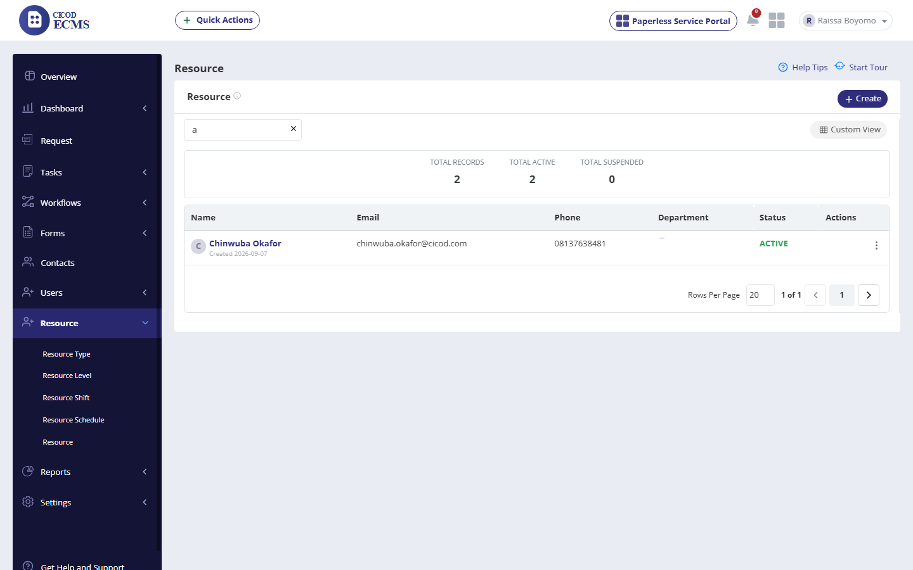
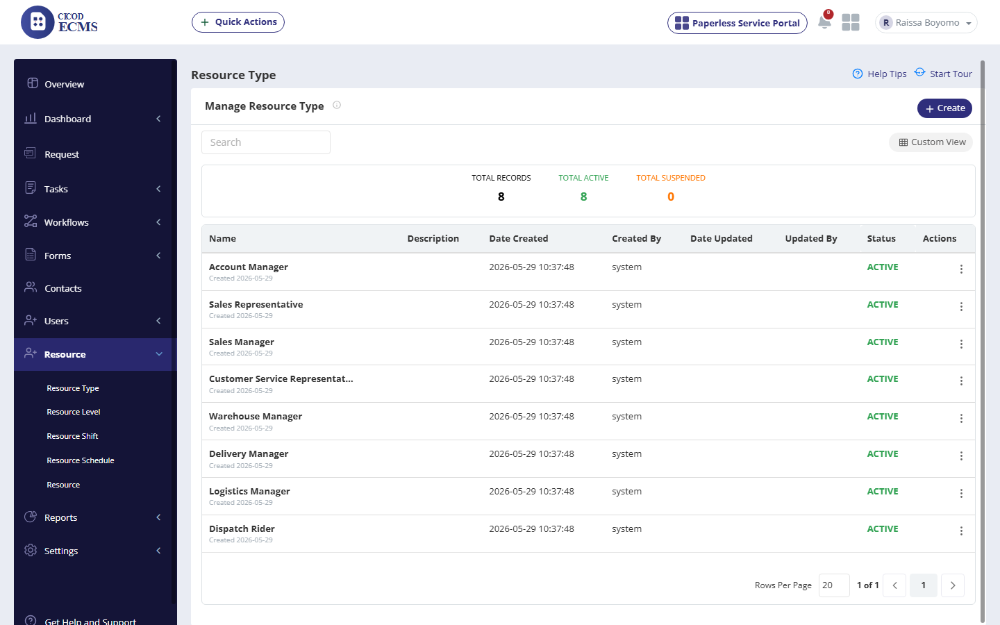
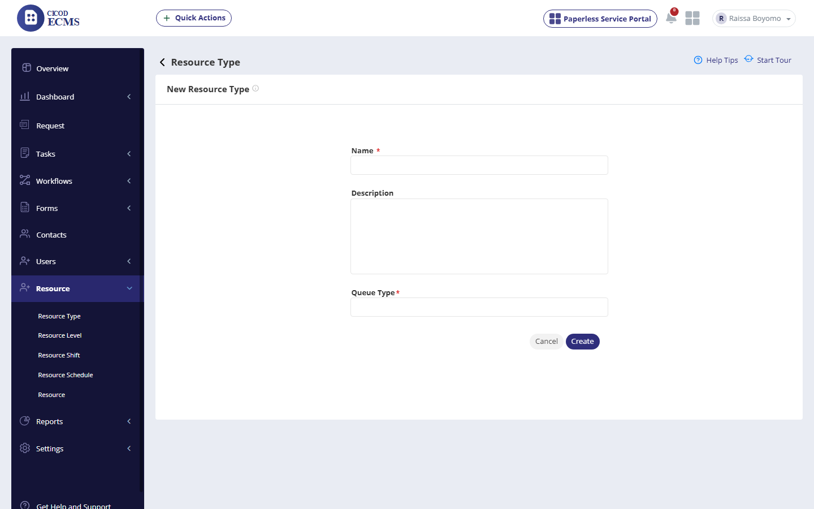
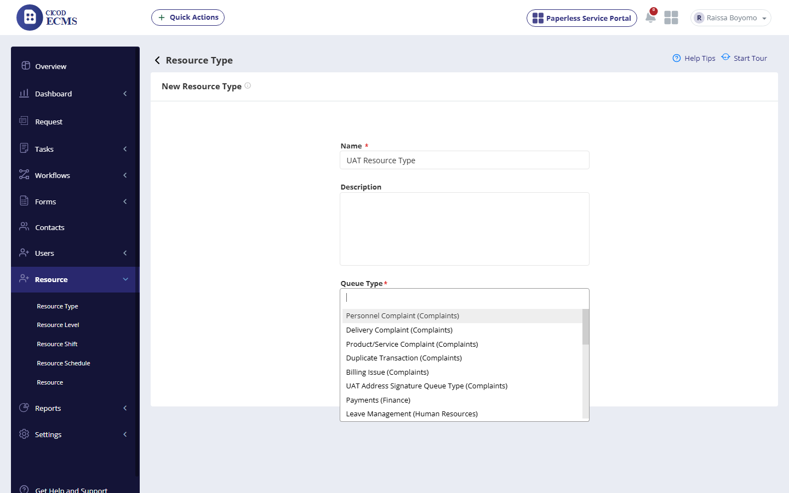
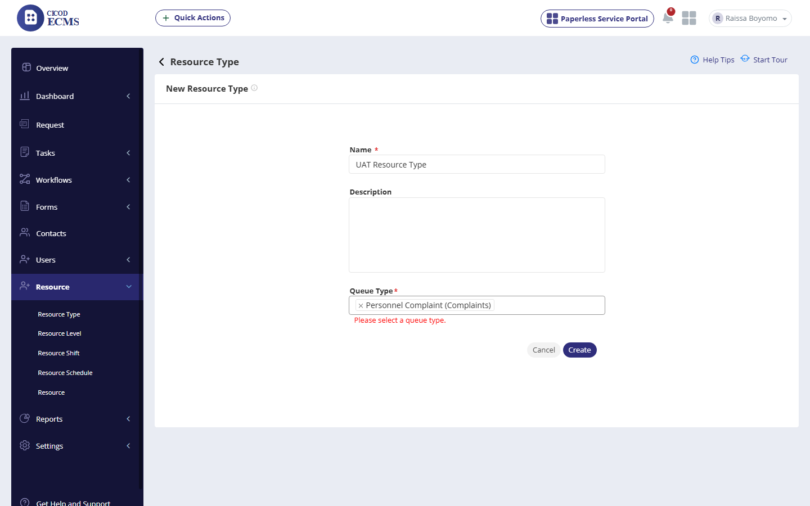
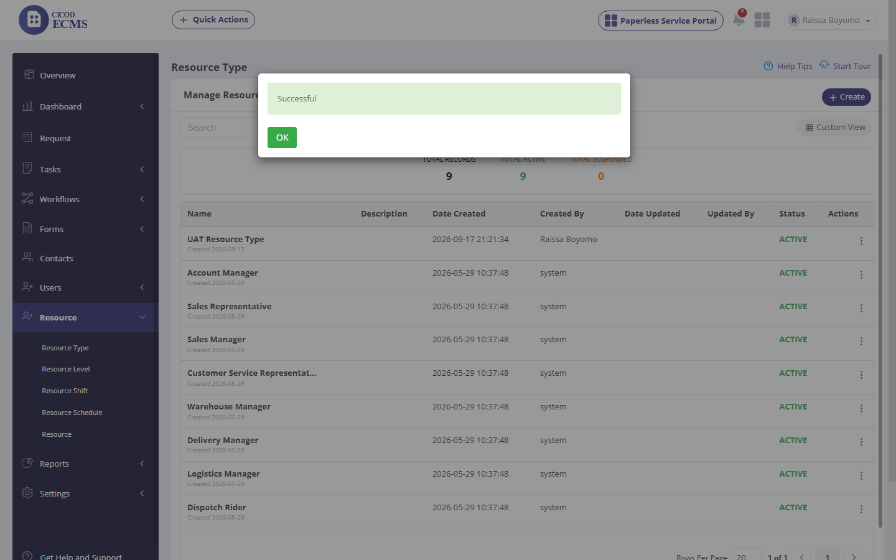

UAT Execution Report: RESOURCE Module
Live functional/UI verification of the standalone Resource feature — not represented in ECMS TEST SCRIPT RECENT VERSION.xlsx, so this scenario/step breakdown was derived from direct UI exploration. This session covered 8 checkpoints across 5 scenarios. Resource Type's Create and Suspend actions both work correctly and persist as expected. Two minor UI deviations were found: the Resource list's KPI header (Total Records: 2) doesn't match the 1 row actually rendered in the grid, and the New Resource Type form leaves a stale "Please select a queue type" message on screen after a valid selection is made (cosmetic only — Create still succeeds). No confirmed defects this session.
| Row | Steps to Reproduce | Expected Result | Actual Result (Live Execution) | Deviations & Defect Notes | Status | Screenshot Evidence |
|---|---|---|---|---|---|---|
| 1 | From the sidebar click "Resource", then click the "Resource" sub-item | Sub-menu shows Resource Type / Resource Level / Resource Shift / Resource Schedule / Resource; "Resource" loads a list of resources |
List loads with Name/Email/Phone/Department/Status/Actions columns and a "+ Create" button. KPI header reads Total Records: 2, Total Active: 2, Total Suspended: 0 — but only 1 data row ("Chinwuba Okafor") is actually rendered, with pagination "1 of 1". |
[Deviation]: KPI count (2) does not match the number of rows actually rendered (1). |
PASSED (minor deviation) |  |
| 2 | Type "a" into the Resource list search box | Should filter the list to matching resources |
Filtered result still shows the same 1 matching row ("Chinwuba Okafor," which contains "a"); the search mechanism itself works, though the underlying row-count anomaly from Row 1 persists. |
None. |
PASSED |  |
| Row | Steps to Reproduce | Expected Result | Actual Result (Live Execution) | Deviations & Defect Notes | Status | Screenshot Evidence |
|---|---|---|---|---|---|---|
| 3 | Click "Resource Type" sub-item | Should display the Manage Resource Type list |
Loads correctly: Total Records 8, Total Active 8, Total Suspended 0, with Name/Description/Date Created/Created By/Date Updated/Updated By/Status/Actions columns — all 8 system-seeded types render correctly (Account Manager, Sales Representative, Sales Manager, Customer Service Representative, Warehouse Manager, Delivery Manager, Logistics Manager, Dispatch Rider). |
None. |
PASSED |  |
| Row | Steps to Reproduce | Expected Result | Actual Result (Live Execution) | Deviations & Defect Notes | Status | Screenshot Evidence |
|---|---|---|---|---|---|---|
| 4 | Click Create on the Resource Type list | Should display the New Resource Type form |
"New Resource Type" form loads with Name* (text), Description (textarea), Queue Type* (multi-select), and Cancel/Create buttons. |
None. |
PASSED |  |
| 5 | Enter Name="UAT Resource Type"; open the Queue Type dropdown | Should display each field correctly |
Name field accepts text correctly. Queue Type dropdown opens a searchable list of queue types grouped by parent queue (e.g. "Personnel Complaint (Complaints)", "Payments (Finance)", "Leave Management (Human Resources)"). |
None. |
PASSED |  |
| 6 | Select "Personnel Complaint (Complaints)" from the dropdown | Should register the selection and clear any required-field error |
The chip "× Personnel Complaint (Complaints)" renders correctly in the field, but a red "Please select a queue type." message remains visible directly underneath despite the valid selection already being made. |
[Deviation]: stale required-field validation message persists after a valid selection. |
PASSED (minor deviation) |  |
| Row | Steps to Reproduce | Expected Result | Actual Result (Live Execution) | Deviations & Defect Notes | Status | Screenshot Evidence |
|---|---|---|---|---|---|---|
| 7 | Click Create | Should save successfully |
"Successful" confirmation modal shown; new "UAT Resource Type" row appears at the top of the list (Created By "Raissa Boyomo", Status ACTIVE), Total Records incremented 8→9. Confirms Row 6’s stale validation message did not actually block submission. |
None (isolates row 6’s cosmetic nature). |
PASSED |  |
| Row | Steps to Reproduce | Expected Result | Actual Result (Live Execution) | Deviations & Defect Notes | Status | Screenshot Evidence |
|---|---|---|---|---|---|---|
| 8 | Open the 3-dot Actions menu on "UAT Resource Type", click Suspend | Should suspend the resource type |
Actions menu correctly shows Update / Suspend. Clicking Suspend shows a "Suspended" confirmation, status flips to SUSPENDED, Total Suspended increments 0→1. |
None. |
PASSED |